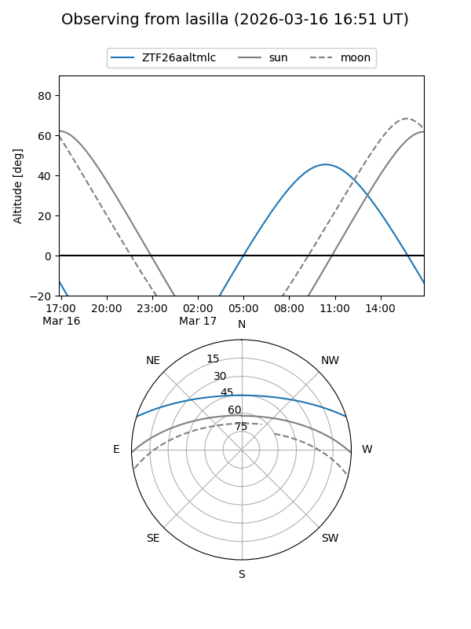
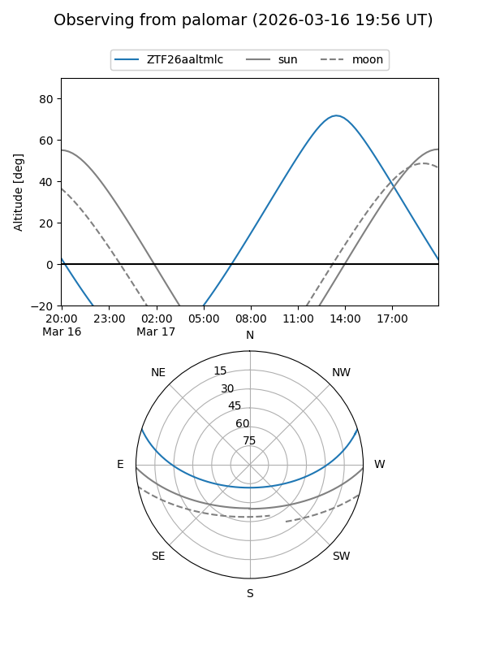

ZTF26aaltmlc
Target ZTF26aaltmlc at 2026-03-17 13:05
Aliases and brokers:
FINK: link
Lasair: link
ALeRCE: link
alt names
ZTF26aaltmlc (ztf,fink_ztf)
Coordinates:
equatorial (ra, dec) = 259.8345,+15.23034
equatorial (HMS+DMS) = 17:19:20.29,+15:13:49.24
galactic (l, b) = (36.9074,+27.10763)
Flags:
Photometry:
last ztfg=19.16
1 ztfg detections
Lightcurve
Visibility


Additional plots